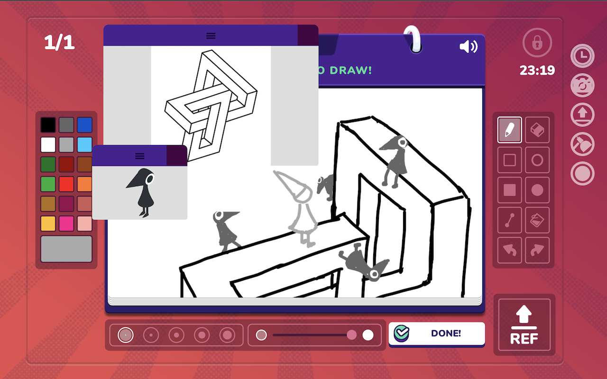
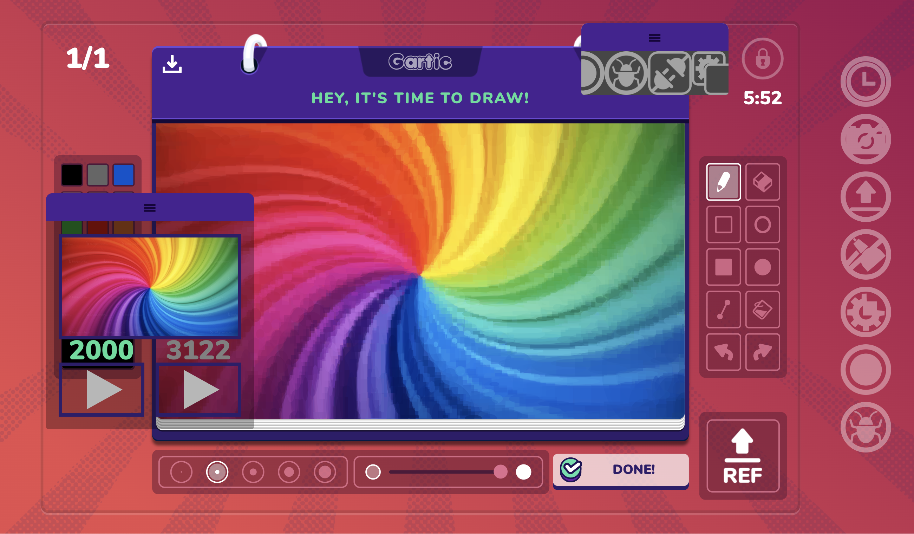

Gartic Cellulart is a Chromium/Gecko extension for the browser-based drawing game Gartic Phone, providing additional functions that integrate with the base game mechanically and stylistically.

Cellulart was written entirely in vanilla HTML/CSS/JS, and makes use of lots of different components of the Chromium environment. For instance, Web Workers (background scripts) keep the interface responsive while pushing heavy computation to background threads, and the structure of WebSockets was studied in order to intercept outgoing traffic.
I was (and still am) hesitant to migrate to Webpack or similar project / build managers, so Cellulart uses minified packages provided by jsdelivr to sidestep external dependencies.

Reformatting the code multiple times was a rewarding experience because I was able to visibly see the quality of my code improving. The project also acclimated me to the feeling of vulnerability that comes with making open-source an unfinished product.
Get the extension for Chrome or Firefox
P.S. As thanks for visiting my website, here’s a fun fact: "Satellite" is not just the name of the module that locks and unlocks the "cheat" modules. It is also the passphrase.